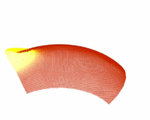
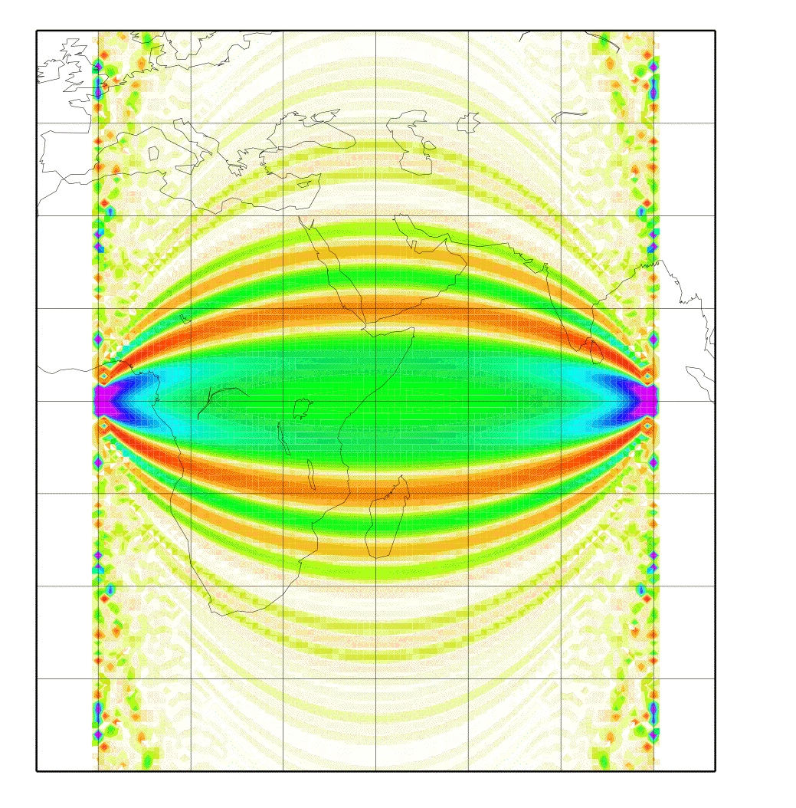
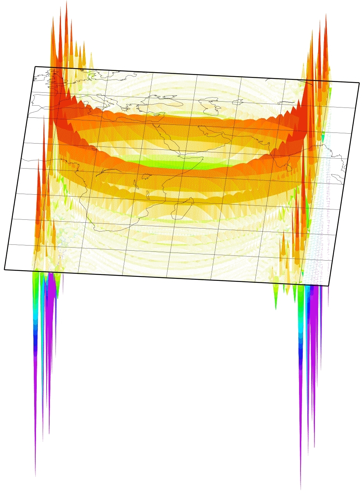
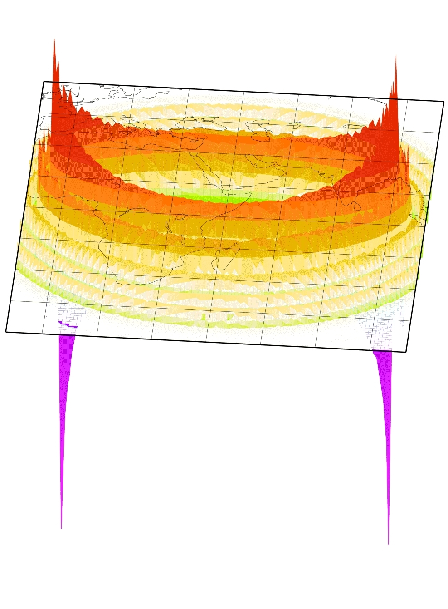

Surface wave scattering
 To studying surface wave scattering, the membrane wave approach becomes very handy. For these investigations we created some weird phase velocity maps: everything will be homogeneous unless a tiny small area with a very low phase velocity. Let us call these maps our 'delta phase velocity maps' (in fact these aren't created by delta functions rather by some sort of plateau function). This here is a wave propagating over such a delta area. The wave comes from the source on the left, hits the scatterer in the middle and propagates further right. As you can see, the delta location will be a scatterer.scattering sensitivity
Seismic waves propagating through the Earth are sensitive to the structures they travel through. For surface wave tomography, these different structures (may it come from temperature or compositional differences) can be described in terms of phase velocity changes. But how strong is a surface wave scattered due to these phase changes?
A way to figure out the scattering sensitivity is by using a Born approximation. In general, that is valid only for small perturbations in phase velocity. Still, for surface waves this is a fairly good assumption. So, let's imagine an earthquake happens on the equator west to the African coast and we sit on an island in the Indian ocean and register the surface waves. This is kind of our basic setup of seismic source and receiver station, just because it's easier to plot them on a map. The image beside shows you, how sensitive a Love wave at a wave period of 150 s would be to a small phase velocity anomaly: if this anomaly is positive, thus speeding up the Love wave, and lies in a green (or blue and purple) region, the Love wave will arrive earlier, than without any perturbation. By contrary, if this positive anomaly lies in a red region, the Love wave will arrive later. Really. Really?

A nasty thing with those Born kernels is that they become singular at the source and receiver (Spetzler et al., 2002) when you use the far-field Green's tensor, which most people do so far. So you have to get around this problem. Perhaps you do some averaging, perhaps some weighting or damping... anyway, the singularities were not really physical. The peeks in the picture on the left arise from these singularities when you do just a little averaging. A way to avoid them, is e.g. to take a near-field approach to the Green's tensor. Just a few people did this till now (Favier et al., 2004). So any other ideas?

Here's where the membrane waves come into play. Do the trick with the scattering from above and you can calculate the kernels numerically. No far-field approximation is needed this way. And all you get are pretty looking sensitivity kernels...
references:
Peter, D., L. Boschi and J.H. Woodhouse, 2009.
Tomographic resolution of ray and finite-frequency methods: a membrane-wave investigation
,
Geophys. J. Int.,
177, 624-638.
Peter, D., C. Tape, L. Boschi and J. H. Woodhouse, 2007.
Surface wave tomography: global membrane waves and adjoint methods
, Geophys. J. Int.,
171, 1098 - 1117.
Favier, N., S. Chevrot and D. Komatitsch, 2004. Near-field influence on shear wave splitting and traveltime
sensitivity kernels, Geophys. J. Int., 156, 467-482.
Spetzler, J., J. Trampert and R. Snieder, 2002. The effect of scattering in surface wave tomography, Geo-
phys. J. Int., 149, 755-767.